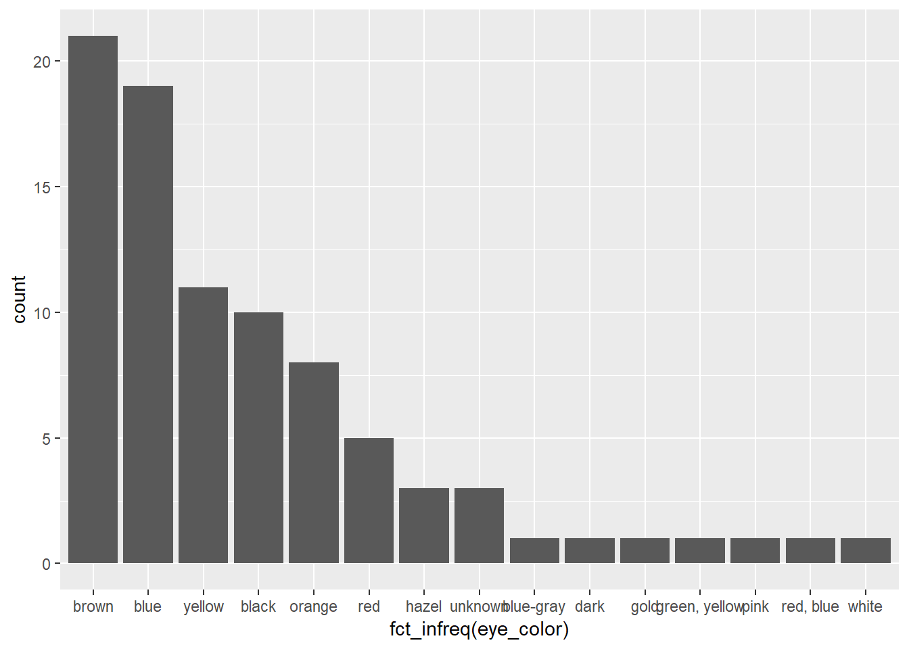
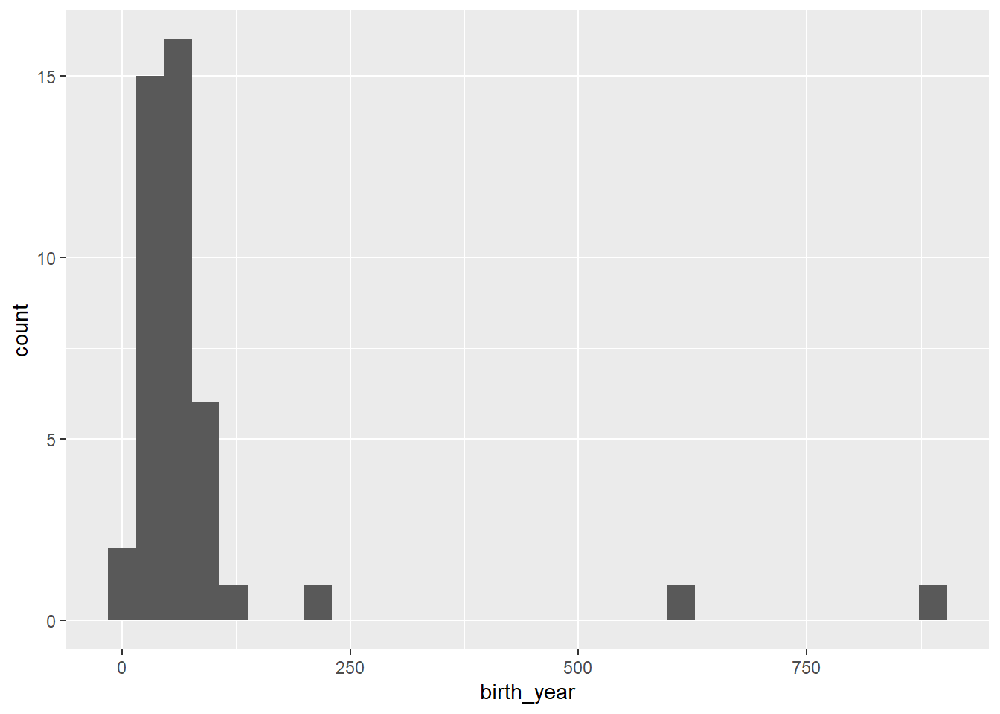
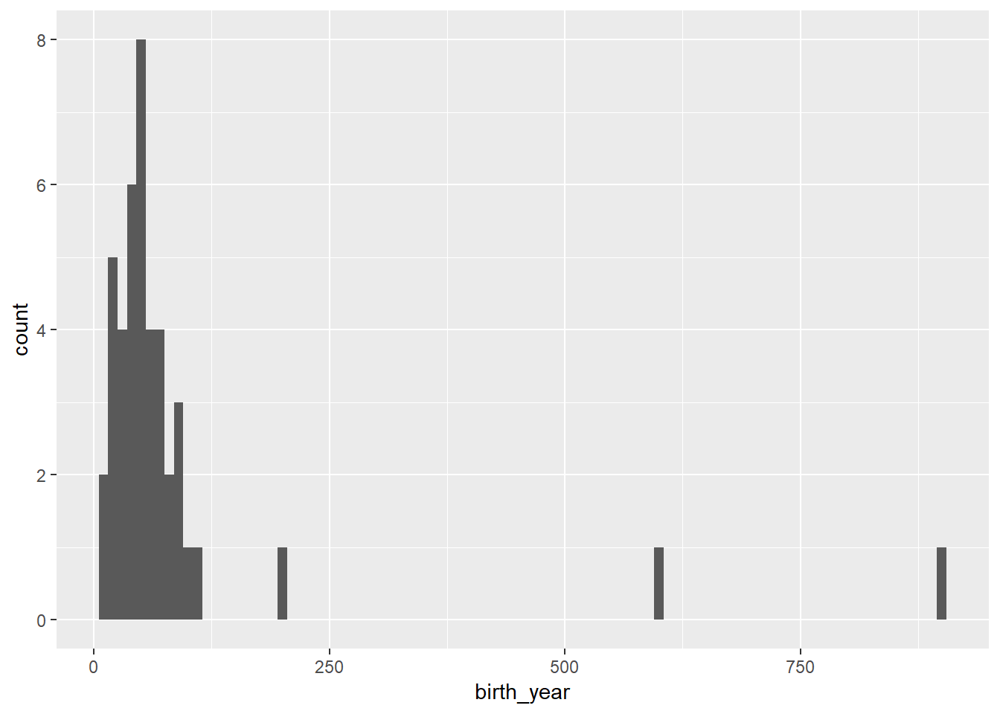
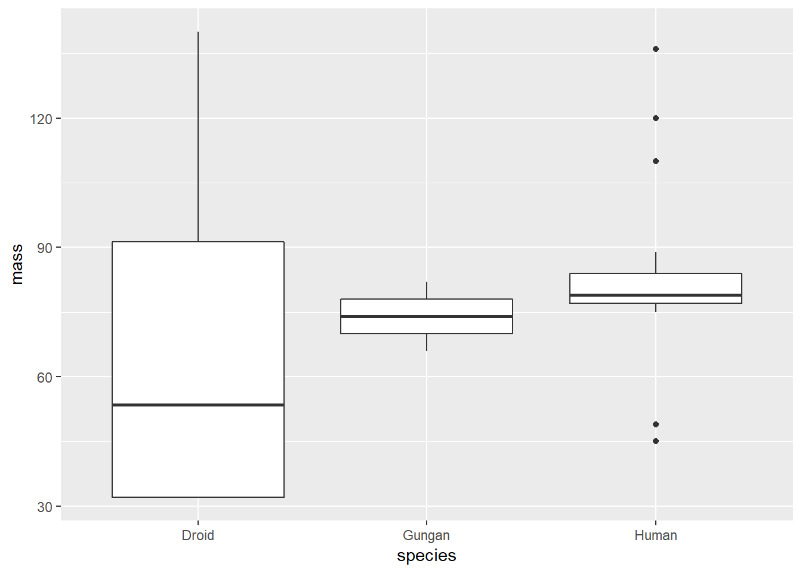
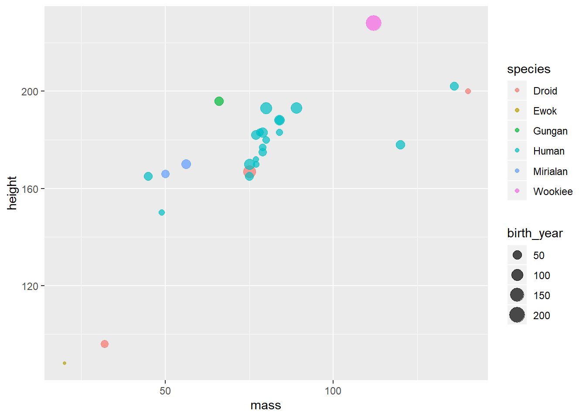

Visualization
When in the data exploratory phase, you can quickly generate very basic visualizations with minimal effort.
For this introductory section on visualization we use the ggplot2 package. We offer a separate workshop on ggplot2. Documentation for ggplot2 is readily available.
You can learn more about ggplot with the following free resources
- Interactive Learning: Visualize Data Primers
- Data Visualization Chapter in R for Data Science by Wickham & Grolemund. See also the Chapter, “Graphics for Communication”.
Basic Grammar
The grammar template for a ggplot2 plot can be seen below. The ggplot function takes a dataframe as the first primary input. Variables can be defined within the aesthetics argument, and finally various geometries are defined. Unlike all other Tidyverse packages, ggplot2 uses a plus operator + for a pipe. This is different from %>% but ultimately not that hard to implement.
Some Example Visualizations and Geometries
Bar Plot
geom_bar - counts the cases (rows) in the dataframe variable and uses that count to display the bar heights.
geom_col - use geom_col when bar heights are already represented in the dataframe. For example, summary counts shows represented values that should be used for the bar height.

A more refine example that also demonstrates how to manipulate labels and colors
ggplot(starwars) +
geom_bar(aes(x = fct_rev(fct_lump(fct_infreq(eye_color), n = 6))),
fill = "grey") +
coord_flip() +
geom_bar(data = starwars %>% filter(eye_color == "orange"),
aes(eye_color), fill = "orange") +
labs(x = "Eye Color", y = "",
title = "Eye Color of Starwars Characters",
subtitle = "Oranges eyes are uncommon.",
caption = "Data Source: dplyr::starwars")
Histogram

Bins can be adjusted with bindwidth or bins. See the documentation for arguments

BoxPlot
starwars %>%
filter(species == "Human" | species == "Droid" | species == "Gungan") %>%
ggplot(aes(x = species, y = mass)) +
geom_boxplot()
Grouping + Legends
Variables can be mapped to exhibit different aesthetics. In this case we map the species variable to the color aesthetic and birth_year variable to size aesthetic. We also account for overplotting by adjusting the opacity as a fixed argument (outside the aes()) with the alpha argument. Variables can be mapped inside the aesthetics function while other fixed characteristics are mapped outside the aesthetic function but inside the geom_. Legends are added automatically by ggplot2.
starwars %>%
drop_na(mass, height, birth_year) %>%
filter(mass < 400,
species == "Human" |
species == "Droid" |
species == "Gungan" |
species == "Mirialan" |
species == "Ewok" |
species == "Wookiee") %>%
ggplot(aes(x = mass, y = height)) +
geom_point(aes(color = species, size = birth_year), alpha = 0.7)
Learn more about ggplot2.
- Our workshop on ggplot2. We offer free video streaming with shareable materials as well.
- Interactive Learning: Visualize Data Primers
- Documentation for ggplot2 is readily available.
- Data Visualization Chapter in R for Data Science by Wickham & Grolemund. See also the Chapter, “Graphics for Communication”